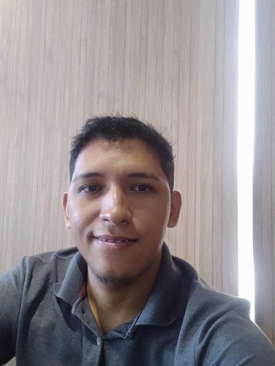

Eu tenho 35 anos e chamo Bruno castro, como um jovem estudante de front-end, sou movido pela vontade de dar vida a interfaces impressionantes e interativas na web. A cada linha de código, sinto a emoção de transformar conceitos criativos em realidade digital. Minha jornada de aprendizado é uma mistura de desafios estimulantes e conquistas gratificantes, enquanto busco dominar as mais tecnologias e ferramentas front-end. Através de projetos pessoais e colaborações com colegas, estou constantemente aprimorando minhas habilidades em HTML, CSS e JavaScript. A estética visual e a usabilidade são meu foco, buscando proporcionar experiências envolventes aos usuários em cada projeto que aborta. Tenho paixão por criar soluções inovadoras e adaptáveis, acompanhando a evolução rápida do desenvolvimento web. Com entusiasmo e entusiasmo, almejo me tornar um profissional de front-end altamente qualificado, motivado para projetos desafiadores e impulsionando a web para novos patamares. Estou animado para abraçar as oportunidades que virão e seguir crescendo nessa empolgante jornada tecnológica.
